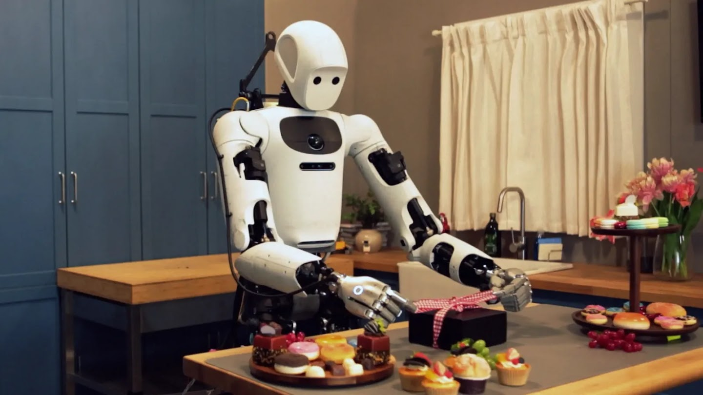

具身智能 / 大模型算法
机器人学会更细的手上功夫，Gemini Robotics 2.5 发布
从夹取食物到双手打结，新一轮评估把语言指令落到了真实操作。

11月10日，Google DeepMind 发布视觉—语言—动作模型 Gemini Robotics 2.5。官方在超过200种任务中评估新模型，包含用夹子取食物、系蝴蝶结与移液等精细操作，并展示其适配人形机器人灵巧手和双指夹爪的能力。
模型正向机器人合作伙伴推出。官方同时披露了汽车工厂金属支架分拣试点；这些结果来自特定设备与测试环境，尚不能证明机器人已能独立承担家庭厨房工作。厨房演示展示的是操作进展，家用产品的交付时间与可靠性仍需另行验证。
Google DeepMind｜Gemini Robotics 2.5 官方公告 · 2026-11-10开发者公告2026-11-10；检索截至11月11日09:05，最近七天未发。